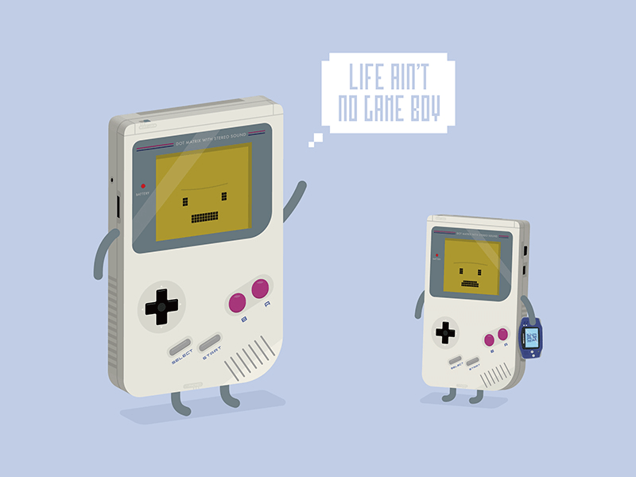

实例课程
关于Scratch
资料下载
关于我们
帮助您的孩子赢在起跑线
"
Everybody in this country should learn how to program a computer...because it teaches you how to think" 这个国家的每个人都应该学会计算机编程...因为它能教会你如何思考.
- Steve Jobs 史蒂夫.乔布斯
了解我们的教育
扫描二维码
我们怎样帮助您的孩子？
Scratch
是由
麻省理工大学媒体实验室
设计的针对8-16岁亲少年的编程学习语言，旨在通过亲少年使用Scratch的过程中培养孩子的独立思维能力，逻辑思维能力以及合作能力。
我们的团队将针对您孩子设计专业的一对一基于Scratch的课程，通过12节-14节不等课程的学习，我们将帮助您的孩子建立较好的逻辑思维能力，具象思维能力和英文的阅读能力。
关于Scratch
实例课程
为什么让您的孩子进行我们的编程学习?
"
下一个二十年，编程将成为一种基本能力"
2014年英国把图形化编程纳入了5岁以上小朋友的必修课；在法国，编程被纳入了初等义务教育的选修课程；在北欧国家如芬兰、爱沙尼亚也把编程作为了一门非常重要的义务教育学科。而在中国，只有很少很少一部分孩子在学编程，少儿编程教育在中国还是一块很少被人触及的真空地带。我们常说“不能让孩子输在起跑线上”，可是我们的孩子在编程这个领域已经落后发达国家很多了.
"
编程可以使孩子拥有比同龄人更严谨的逻辑思维"
不管以后孩子是否从事编程行业，编程时学到的逻辑思维、算法思维将会让孩子终身受益. 更何况现在的数学，物理都是考试的核心课程，都是需要对应的逻辑！毫不夸张的说，这种思维模式比奥数学到的思维模式有用多了，也实用多了
"
我们的学习可以一定程度的预防孩子对游戏的沉迷"
家长经常头疼的孩迷恋上电脑游戏，根据我们的调查，编程可以告诉孩子们游戏是怎么开发出来的，游戏中的各种人物、场景、属性等都将会以它们最“原始”的样子展现在孩子们眼前.孩子的思想格局提高，明白了程序员搞的小把戏，自然不会沉迷游戏。

"
互联网是目前增长最快的行业之一，也是全球薪资水平最高的职业之一"
仅在美国，互联网行业工程师的薪水就比公民平均收入高75%以上。预计到2020年，此行业会新增超过10万个就业岗位，编程能力的重要性可见一斑。
互联网薪资材料
关于我们
我们的团队致力于利用互联网技术来提高青少年的文化素质，团队的成员分布于中国，美国. 我们具有多年的互联网从业经验，以及多年的小学,高中的教育经验。如果您对我们提供的教育服务有兴趣，可以联系我们！
微信公众号
扫描二维码
了解我们的团队
 了解我们的教育
微信公众号
了解我们的教育
微信公众号